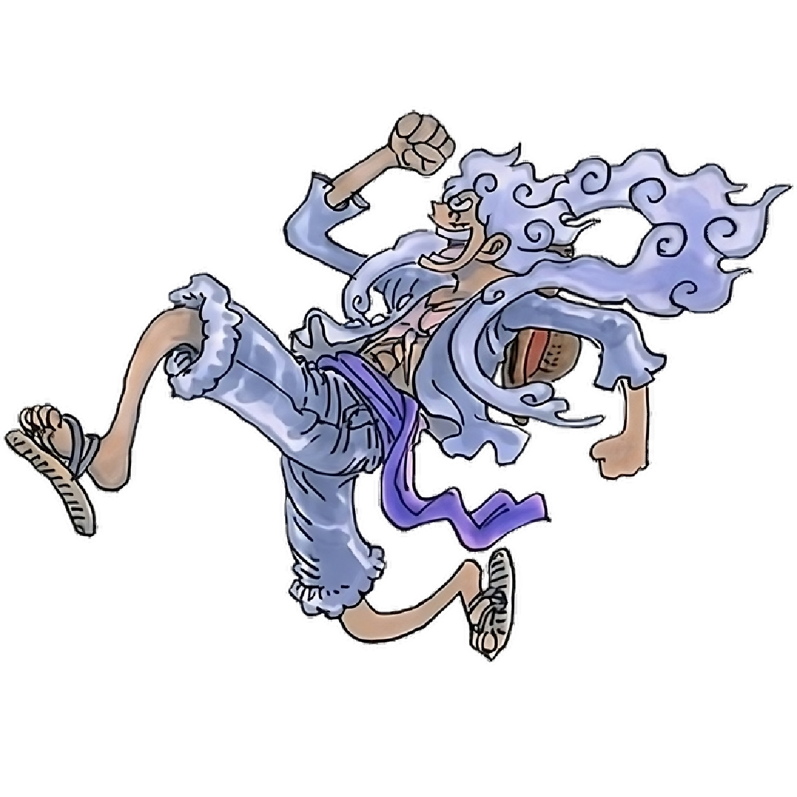

Luffy is one of my all time favorite characters in fiction. He stands
as the symbol of freedom and gives his all to fight for it. By a weird
twist of fate, he ends up with the rubber rubber devil fruit. It turns out
his body became rubber this helps him in fights often in goofy ways.
But as the story progresses, we learn that his fruit was never actually
the rubber rubber fruit. It turns out his fruit was a
Mythical Zoan fruit called the
Human Human Fruit, Model: Nika. This fruit is formed?
against an actual Sun God named Nika in the one piece world. This fruit,
similar to other zoans has a will of its own, and has evaded the world
governement for decades. As they continuosly failed to capture the fruit,
they decided to cover up its existence by erasing it from the records and
instead naming it as a paramecia fruit called the rubber rubber fruit.